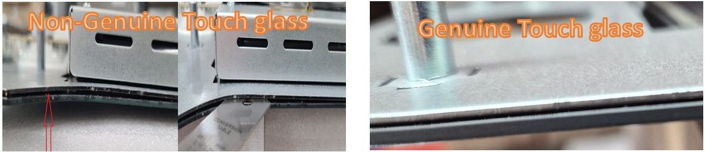

1
Bonding Issues
In some non-OEM touch assemblies, the touch sensor is not properly bonded to the metal frame. This may reduce structural support and increase the likelihood of cracks during handling, installation, or field use.
